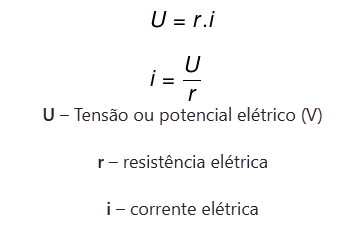
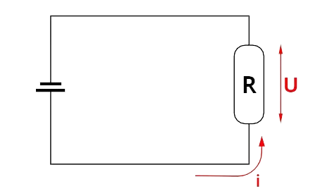
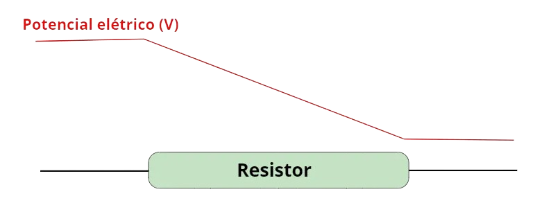
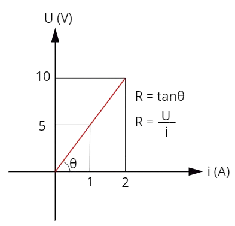

Tudo que você precisa saber sobre Lei de Ohm
As leis de Ohm permitem calcularmos importantes grandezas físicas, como a tensão, corrente e a resistência elétrica dos mais diversos elementos presentes em um circuito. No entanto, essas leis só podem ser aplicadas a resistências ôhmicas... Isto é, corpos cujas resistências tenham módulo constante.
1ª lei de Ohm
A 1ª lei de Ohm determina que a diferença de potencial entre dois pontos de um resistor é proporcional à corrente elétrica que é estabelecida nele. Além disso, de acordo com essa lei, a razão entre o potencial elétrico e a corrente elétrica é sempre constante para resistores ôhmicos.
Na lei mostrada na figura acima, chamamos de U a tensão elétrica ou o potencial elétrico. Essa grandeza é escalar e é medida em Volts. A diferença de potencial elétrico entre dois pontos de um circuito, por sua vez indica que ali existe uma resistência elétrica, como mostra a figura:
Essa diferença decorre do consumo da energia dos elétrons, uma vez que essas partículas transferem parte de sua energia aos átomos da rede cristalina, quando conduzidos por meios que apresentem resistência à sua condução. O fenômeno que explica tal dissipação de energia é chamado de efeito Joule.
A figura abaixo mostra o perfil do potencial elétrico antes e após a passagem da corrente por um elemento resistivo de um circuito elétrico, observe a queda de energia:
A corrente elétrica i mede o fluxo de cargas pelo corpo em Ampères, ou em C/s. A corrente elétrica é diretamente proporcional à resistência elétrica dos corpos: quanto maior a resistência elétrica de um corpo, menor será a corrente elétrica a atravessá-lo.
2ª lei de Ohm
A resistência elétrica R é uma propriedade do corpo que é percorrido por uma corrente elétrica. Essa propriedade depende de fatores geométricos, como o comprimento ou a área transversal do corpo, mas também depende de uma grandeza chamada de resistividade. Tal grandeza relaciona-se exclusivamente ao material do qual um corpo é formado. A lei que relaciona a resistência elétrica a essas grandezas é conhecida como segunda lei de Ohm.
A segunda lei de Ohm é mostrada na figura abaixo:
Chamamos de resistor ôhmico todo corpo capaz de apresentar resistência elétrica constante para um determinado intervalo de tensões elétricas.
O gráfico de tensão em função da corrente elétrica para os resistores ôhmicos é linear, como mostra a figura abaixo:
Tomando-se o segmento reto do gráfico, sabe-se que o potencial elétrico entre os terminais de um resistor sofrerá uma variação em seu potencial elétrico que é sempre proporcional à corrente elétrica que o percorre, como mostra a figura abaixo: